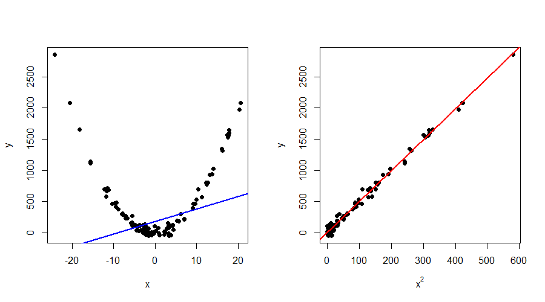

Week 2 - The linear regression model
Contents
This week, we are going to move from approximation to estimation. We no longer assume that the world is nonrandom, but instead suppose that the data at our disposal are realizations of random variables. You might have the feeling that not much is changing, but we will spend some extra time highlighting the difference when we get to best unbiased estimation. But before discussing that, we are going to define the linear regression model, the corresponding terminology and a set of ideal conditions (assumptions). Moreover, we consider the important difference between a data-generation process (DGP) and a model. Lastly, we make a start with best unbiased estimation, which boils down to solving a restricted optimization problem.
The simple linear regression model
The simple linear regression model looks exactly the same as in the approximation framework \[ y_{i} = \beta_{1} + \beta_{2}x_{i} + u_{i}, \qquad (i=1, \ldots, n), \] but its interpretation is quite different. In the previous setup, all observations \((x_{i}, y_{i})\) for \(i = 1, \ldots, n\) were fixed. Thus, they could just be treated as given. The task was then simple: find the best-fitting line based on the criterion that the sum of squared distances from the line to the observations is as small as possible. However, we are now going to assume that \(y_{i}\) is a random variable called the dependent variable (or explained variable, regressand). This variable is related to an explanatory variable \(x_{i}\) (or independent variable, regressor). At first, we are going to assume that \(x_{i}\) is nonrandom. The basics of econometric theory do not change if we make this simplifying assumption and the material is easier to grasp. We call \(\beta_{1}\) and \(\beta_{2}\) the unknown parameters or coefficients of the model, and \(u_{i}\) the error term or disturbance term.
Last week, we derived the least-squares approximator in the non-random context. It turns out that the expression \(b = (X'X)^{-1}X'y\) will also be the least-squares estimator. You might be under the impression that this is ‘obvious’, but it is actually far from! When we discuss best unbiased estimation, it will become clear that we will get to the same expression but by solving a completely different optimization problem!
Note that we will typically write “hats” on the coefficients to indicate estimators. For example, the least-squares estimator of \(\beta\) is denoted \(\widehat{\beta}\) (and no longer \(b\)).
Important to remember: \(y_{i}\) and \(u_{i}\) are random variables, \(x_{i}\), \(\beta_{1}\) and \(\beta_{2}\) are nonrandom. The variables \(y_{i}\) and \(x_{i}\) are observable, while \(\beta_{1}\), \(\beta_{2}\) and \(u_{i}\) are unobservable. The generalization to the multiple linear regression model can be found in ITE. We also study the ideal conditions (assumptions).
The role of assumptions
The assumptions introduced in ITE for the general model \[ y = X\beta + u, \] are given by
- Assumption 1: The model is linear.
- Assumption 2: The \(n \times k\) matrix \(X\) is nonrandom and has rank \(k\).
- Assumption 3: The \(n \times 1\) vector \(u\) has mean zero and variance \(\sigma^{2}I_{n}\).
- Assumption 4: The \(n \times 1\) vector \(u\) follows a multivariate normal distribution.
- Assumption 5: If we let \(Q_{n} = X'X/n\), then \(Q_{n} \to Q\) as \(n \to \infty\), where \(Q\) is a finite and positive definite \(k \times k\) matrix.
These assumptions are quite different in nature and it is good to understand why we need them. It can be argued that assumptions are important for two main reasons, which we can classify as theoretical and diagnostic reasons. In the first case, we need the set of ideal conditions to show certain theoretical results such as unbiasedness, consistency and asymptotic normality of estimators. However, in real life, assumptions might not hold true. A slight deviation could not be extremely problematic, but what if we are actually far off from the ideal conditions? This brings us to the second case, the diagnostic reason. During this course, you will learn how to check and test the assumptions. Moreover, you learn how to study the effects of violations on estimators and test statistics in a controlled environment. This way, you can judge the appropriateness of your model (and make adjustments, if needed). Let us consider the assumptions separately.
Assumption 1: The model is linear
It is important to note that the linearity is in terms of the parameters \(\beta\), not the variables \(X\). Interestingly, this means that nonlinear relationships between variables can be modelled using a linear regression model. Let’s consider a famous example in which there is a quadratic relationship between \(x\) and \(y\). Figure 1 displays this example.

Figure 1a shows that linear regression between \(x\) and \(y\) is not meaningful. The blue line represents the estimated linear regression line, which is clearly not able to capture the relationship. However, if we instead run the regression \[ y_{i} = \beta_{1} + \beta_{2} x^{2}_{i} + u_{i}, \] we see that this relationship is close to linear. Consequently, the estimated linear regression line (in red) now shows an almost perfect fit. Of course, it is not always possible to recast in a nonlinear relationship into a linear regression model (where the variables are transformed). There are “linear models in disguise”, but sometimes there is need for a nonlinear regression model (not captured in this course). Because linearity is a so-called first-order approximation to the model, it often even forms the basis for nonlinear models (you will see some examples of such models [logit/probit/tobit] in Econometrics II). Main advantage of the linear regression model is its high degree of interpretability.
Determine whether linear regression is warrented for the following models:
- \(y_{i} = \beta_{1}x_{1,i} + \sqrt{\beta_{2}}x_{2,i} + u_{i}\)
- \(y_{i} = \beta_{1}x_{1,i} + \beta_{2} x_{1,i}^{2} + u_{i}\)
- \(y_{i} = \beta_{1}x_{1,i} + \beta_{2}x_{2,i} + \beta_{3}x_{1,i}x_{2,i} + u_{i}\)
- \(y_{i} = \beta_{1} \exp(\beta_{2}x_{1,i})u_{i}\) for \(\beta_{1} > 0\), \(u_{i} >0\), \(y_{i} > 0\) for all \(i\).
Assumption 2: The \(n \times k\) matrix \(X\) is nonrandom and has rank \(k\)
This assumption has two parts to it, which we will discuss separately. First, the matrix \(X\) is nonrandom. Note that this is a choice that we make for theoretical reasons, because our mathematical derivations are easier if we treat the independent variables as given. This is not something that you can check or test on data. We make this simplifying assumption to make our life easier (we circumvent conditioning, which we discuss in week 6 of the course) but it comes at the cost of a loss in generality.
It is also implicit that the number of observations \(n\) is always larger than the number of regressors \(k\). If this was not the case, we would not be able to estimate the coefficients in the model. You can draw the analogy with solving a system of equations. If the pieces of information \(n\) are smaller than the number of unknowns \(k\), then the system cannot be solved. In case of equality \(n=k\), it is technically possible to find a solution but it is very undesirable in the estimation framework (some measures, such as the SER, could not even be computed) as there are no degrees of freedom left to test or validate the model’s accuracy.
Second, we assume that the \(n \times k\) matrix \(X\) has rank \(k\). The assumption dictates that all \(k\) columns are linearly independent. In other words, it is impossible to write a single column as a linear combination of all the other columns. Why is this important? Last week, we saw that the least-squares approximator is given by \(b = (X'X)^{-1}X'y\). In the estimation framework, this formula remains the same as we will prove next week. Note that \(X'X\) is a \(k \times k\) matrix of full rank \(k\) (see Section A.3 in ITE for more details). We can only compute the inverse of \(X'X\) if it is nonsingular, i.e., if it has full rank.
In case we do have columns in \(X\) that are linear combinations of each other, we call it perfect multicollinearity. The wording is exactly saying what is going on: multiple columns are perfectly collinear. Below you can again find a short exercise in which you have to guess whether \(X\) could be collinear.
For the following models, argue whether it is possible that \(X\) is collinear.
- \(y_{i} = \beta_{1} + \beta_{2}x_{i} + u_{i}\).
- \(y_{i} = \beta_{1} + \beta_{2}\text{North}_{i} + \beta_{3}\text{South}_{i} + \beta_{4} \text{West}_{i} + \beta_{5}\text{East}_{i} + u_{i}\), where \(y_{i}\) is the wealth in city \(i\) and \(\text{North}_{i} = 1\) if the city is located in the North, and vice versa for the other regressors. Each city can only belong to one cardinal direction.
- \(y_{i} = \beta_{1} + \beta_{2}\text{Full-Time}_{i} + \beta_{3}\text{Part-Time}_{i} + u_{i}\), where \(y_{i}\) is productivity of employee \(i\) who is either a full-time or part-time worker.
- \(y_{i} = \beta_{1} + \beta_{2}x_{i} + \beta_{3} x_{i}^{2} + u_{i}\).
Assumption 3: The \(n \times 1\) vector \(u\) has mean zero and variance \(\sigma^{2}I_{n}\)
The first part of the assumption, \(E(u) = 0\), is not really restrictive. Even if the errors had a non-zero population mean, its effect would be absorbed into the model’s intercept. Thus, it is convenient to assume without loss of generality. The second part of the assumption, \(\Var(u) = \sigma^{2}I_{n}\) tells us a couple of things. Note that the variance of a vector is a matrix with the separate variances on the diagonal, and the covariances on the off-diagonal elements. That is, \[ \Var(u) = \begin{pmatrix} \Var(u_{1}) & \Cov(u_{1},u_{2}) & \cdots & \Cov(u_{1}, u_{n}) \\ \Cov(u_{2}, u_{1}) & \Var(u_{2}) & \cdots & \Cov(u_{2}, u_{n}) \\ \vdots & \vdots & & \vdots \\ \Cov(u_{n}, u_{1}) & \Cov(u_{n}, u_{2}) & \cdots & \Var(u_{n}) \end{pmatrix} = \begin{pmatrix} \sigma^{2} & 0 & \cdots & 0 \\ 0 & \sigma^{2} & \cdots & 0 \\ \vdots & \vdots & & \vdots \\ 0 & 0 & \cdots & \sigma^{2} \end{pmatrix}. \] Thus, we can see that \(\Cov(u_{i}, u_{j}) = 0\) for all \(i \neq j\). In words, this means that the error terms of respondents \(i\) and \(j\) are not correlated. Ideally, we also do not want a relation between two or more respondents. This can be motivated from both a theoretical and practical perspective. If the data is independent and identically distributed (i.i.d.), then this reflects that the respondents come from the same population (they have an identical distribution) but their responses are made independently of one another.
Another important feature is that \(\Var(u_{i}) = \sigma^{2}\) for all \(i = 1, \ldots, n\). This is a property called homoskedasticity. In empirical work, this assumption might fail and that is why we will revisit it towards the end of the course. For now, we assume that there is a constant variance for all the error terms.
Assumption 4: The \(n \times 1\) vector \(u\) follows a multivariate normal distribution
In the book, three main reasons are given for this assumption:
- The normal distribution is easy to work with;
- The normal distribution fits well in the context of measurement errors;
- The normal distribution serves as a second-order approximation to an arbitrary density function (certainly in the center of the distribution).
During this course, we will benefit a lot from the normal distribution and its characteristics. In particular, Assumption 3 and 4 together imply that the disturbances \(u_{i}\) are not only uncorrelated, but in fact independent (a stronger property!). But we will use more properties, and one of the most important ones is that linear combinations of normal variables are again normally distributed. More information about the (multivariate) normal distribution is in Section B.3 of ITE. However, it is important to mention that normality is often seen as a “luxury assumption”. It simplifies a lot of derivations, but it is by no means necessary to show important results such as unbiasedness, consistency, and asymptotic normality of least-squares estimators. In various empirical applications (e.g., financial returns) the assumption of normally distributed error terms is not appropriate. For this reason, we will reconsider this assumption later on in the course.
Assumption 5: If we let \(Q_{n} = X'X/n\), then \(Q_{n} \to Q\) as \(n \to \infty\), where \(Q\) is a finite and positive definite \(k \times k\) matrix
We will only need this assumption when we discuss asymptotics. However, let us try to get some intuition of what is going on here. Consider the simple linear regression model in matrix form. This means \(X = (\imath : x)\) where \(\imath\) is an \(n \times 1\) vector of ones, and \(x\) an \(n \times 1\) vector containing \(x_{1}, \ldots, x_{n}\) (i.e., \(n\) observations on a single regressor). Since \(X\) is \(n \times 2\), we know that \(X'X\) is a \(2 \times 2\) matrix, which looks as follows: \[ X'X = \begin{pmatrix} \imath'\imath & \imath'x \\ x'\imath & x'x \end{pmatrix} = \begin{pmatrix} n & \sum_{i=1}^{n} x_{i} \\ \sum_{i=1}^{n} x_{i} & \sum_{i=1}^{n} x_{i}^{2} \end{pmatrix}. \] Let us have a look at the separate entries of this matrix. When \(n \to \infty\), we do not want any elements ‘to explode’ (i.e., diverge) but also not all shrink to zero (making the matrix singular and thus non-invertible). Note that \(\frac{1}{n}\) is exactly the right scaling to ensure that those two situations do not occur. That is, we obtain \[ Q_{n} = X'X/ n = \begin{pmatrix} 1 & \frac{1}{n}\sum_{i=1}^{n} x_{i} \\ \frac{1}{n}\sum_{i=1}^{n} x_{i} & \frac{1}{n}\sum_{i=1}^{n} x_{i}^{2} \end{pmatrix}, \] where the element \((Q_{n})_{11} = 1\) is now constant (any other scaling would have caused diverging to \(\infty\) or convergence to zero), the element \((Q_{n})_{12} = (Q_{n})_{21} = \frac{1}{n}\sum_{i=1}^{n} x_{i}\) is the sample mean which converges to the population mean \(E(x_{i})\) by the law of large numbers and the element \((Q_{n})_{22} = \frac{1}{n}\sum_{i=1}^{n} x_{i}^{2}\) does so similarly but then to \(E(x_{i}^{2})\). For now, this intuition suffices. We will discuss the assumption in more detail when we actually need it.
Model and data-generation process
It is important to understand the difference between a model and a data-generation process (DGP). As explained in the book, the DGP is the true process that generates the data. In reality, we almost never know the DGP (only in very simplified settings, or experimental setups). As econometricians, we use models to approximate the DGP and often we want to ask ourselves: “How well is my model performing for a certain DGP?”.
This means that, unlike real life, we will often assume that we know the DGP in this course. This way, we have the possibility to assess the performance of the model. Suppose that we are interested in measuring the effect of \(x\) on \(y\) as adequate as possible. If we suppose the DGP is given by \[ y_{i} = \beta_{1} + \beta_{2} x_{i} + u_{i}, \tag{1}\] we could ask ourselves the question: “Suppose I misspecify my model by accidentally excluding the intercept, am I still able to recover the effect of \(x\) on \(y\) adequately?”. Thus, we know 1 is the truth, but we estimate instead \[ y_{i} = \beta_{2}x_{i} + u_{i}. \tag{2}\] Clearly, 2 is a restricted version of 1 by setting \(\beta_{1} = 0\). Thus, we would actually investigate whether such a restriction is appropriate in this case. How to do that, we will study later (from Section 2.14 onwards)!
Properties of estimators
As we mentioned before, approximation is very different from estimation. In the approximation context, data is nonrandom and thus it makes no sense to talk about concepts such as unbiasedness. However, if we assume that data are realizations of random variables, it means that every new draw results in a different data set. In other words, suppose two students are going to collect data at the VU, e.g., by asking \(n\) students to fill in a survey. The two students each manage to get a sample from the same population, but their samples are different because they asked different students to complete the survey. However, both samples are a valid realization of a random process. Thus, if we were to estimate a linear regression model by least squares on both samples, we expect that the estimator “does well” in both cases.
Unbiasedness intuitively means that our estimator equal the correct, true value on average. In technical terms, for a given parameter \(\theta\), we have \(E(\hat{\theta}) = \theta\). To understand this, imagine that we could repeatedly draw new samples from the population and calculate \(\hat{\theta}\) for each sample. The average of these estimates would equal the true value \(\theta\). In other words, the estimator does not systematically overestimate or underestimate the parameter.
This is an informal way to think about unbiasedness, but it is important to distinguish it from asymptotic concepts such as consistency: unbiasedness concerns the estimator’s average over repeated samples, whereas consistency concerns what happens to the estimator as the sample size grows.
Unbiasedness of the least-squares estimator in the simple linear regression model
How can we prove that an estimator is unbiased? Let us characterize this for the least-squares estimator of the slope in the simple linear regression model. We assume that the model and the DGP coincide. The least-squares estimator of \(\beta_{2}\) is given by \[ \hat{\beta}_{2} = \frac{\sum_{i=1}^{n} (x_{i} - \overline{x})(y_{i} - \overline{y})}{\sum_{i=1}^{n} (x_{i} - \overline{x})^{2}}. \] Based on the DGP, \(y_{i} = \beta_{1} + \beta_{2}x_{i} + u_{i}\) and \(\overline{y} = \beta_{1} + \beta_{2}\overline{x} + \overline{u}\) by taking the sample average. Plugging these expressions into the estimator, yields \[ \begin{aligned} \widehat{\beta}_{2} &= \frac{\sum_{i=1}^{n} (x_{i} - \overline{x})[(\beta_{1} + \beta_{2}x_{i} + u_{i}) - (\beta_{1} + \beta_{2}\overline{x} + \overline{u})]}{\sum_{i=1}^{n} (x_{i} - \overline{x})^{2}} \\ &= \frac{\sum_{i=1}^{n} (x_{i} - \overline{x})[(\beta_{2}(x_{i} - \overline{x}) + u_{i} - \overline{u})}{\sum_{i=1}^{n} (x_{i} - \overline{x})^{2}} \\ &= \beta_{2} + \frac{\sum_{i=1}^{n} (x_{i} - \overline{x})(u_{i} - \overline{u})}{\sum_{i=1}^{n} (x_{i} - \overline{x})^{2}} \\ &= \beta_{2} + \frac{\sum_{i=1}^{n} (x_{i} - \overline{x})u_{i}}{\sum_{i=1}^{n} (x_{i} - \overline{x})^{2}}, \end{aligned} \] because \(\sum_{i=1}^{n} (x_{i} - \overline{x})\overline{u} = \overline{u}\sum_{i=1}^{n} (x_{i} - \overline{x}) = \overline{u} \cdot (n\overline{x} - n\overline{x}) = \overline{u} \cdot 0 = 0\). If we now take expectations, we obtain \[ \begin{aligned} E(\widehat{\beta}_{2}) &= E \left(\beta_{2} + \frac{\sum_{i=1}^{n} (x_{i} - \overline{x})u_{i}}{\sum_{i=1}^{n} (x_{i} - \overline{x})^{2}} \right) \\ &= E(\beta_{2}) + E \left(\frac{\sum_{i=1}^{n} (x_{i} - \overline{x})u_{i}}{\sum_{i=1}^{n} (x_{i} - \overline{x})^{2}} \right) \\ &= \beta_{2} + \frac{\sum_{i=1}^{n} (x_{i} - \overline{x})E(u_{i})}{\sum_{i=1}^{n} (x_{i} - \overline{x})^{2}} \\ & = \beta_{2}, \end{aligned} \] where we used that \(X\) is nonrandom (and thus can be taken outside of the expectation operator) by Assumption 2 and \(E(u_{i}) = 0\) by Assumption 3. Since \(E(\widehat{\beta}_{2}) = \beta_{2}\), we have shown that the least-squares estimator \(\widehat{\beta}_{2}\) is unbiased for the slope coefficient \(\beta_{2}\). Note how the assumption that \(X\) is nonrandom simplified the derivation a lot.
How to continue?
We have just shown unbiasedness of the least-squares estimator in the simple linear regression model. It is important that you are able to show unbiasedness of estimators throughout this course. However, we are about to take a different approach in the book. That is, we forget about everything we learnt in the framework of approximation. We don’t know the derived formulas anymore. We are going to continue as follows. Assume we have the linear regression model in general form \(y = X\beta + u\) and Assumption 1-5 hold. Our goal is to derive the best linear unbiased estimator (BLUE). This means that we are interested in linear estimators, which are unbiased and have the lowest variance possible. We can find the BLUE by solving a contrained minimization problem. We are going to minimize the variance of a linear estimator, subject to the estimator being unbiased. How this exactly works, is explained in the last sections of this week.